1 / 6
담기
떠오르면 입력칸에 한 줄, 엔터.

GTD 워크
평생 무료 · 내 구글 시트로

지금은 적기만 해요. 정리는 나중에.

입력칸부터 캘린더까지, 한 화면에 차곡차곡.

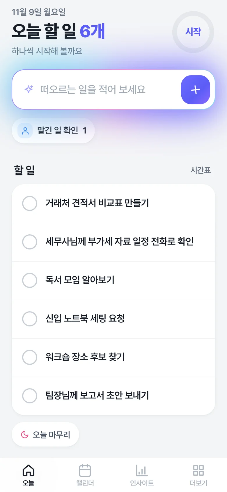
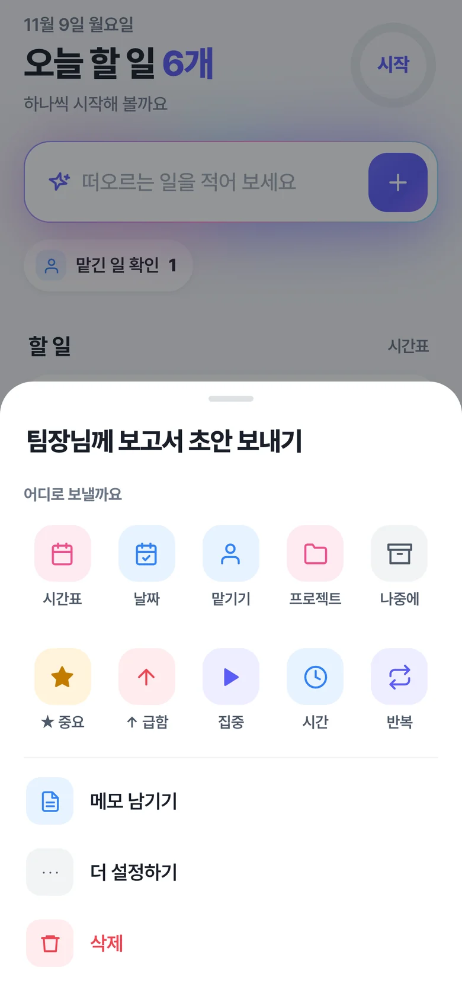
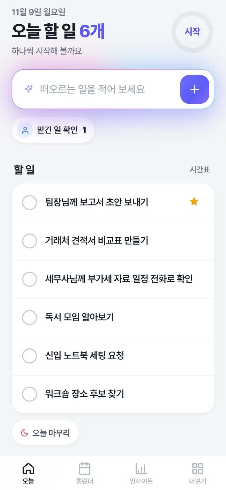
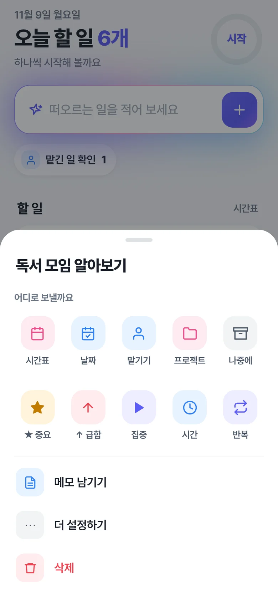
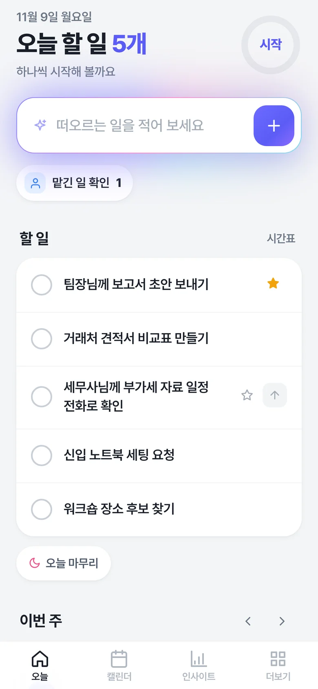
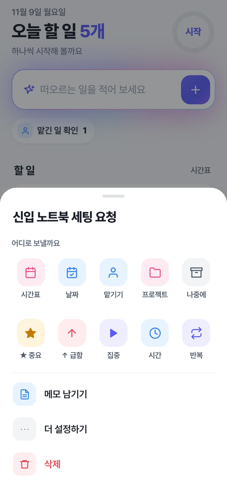
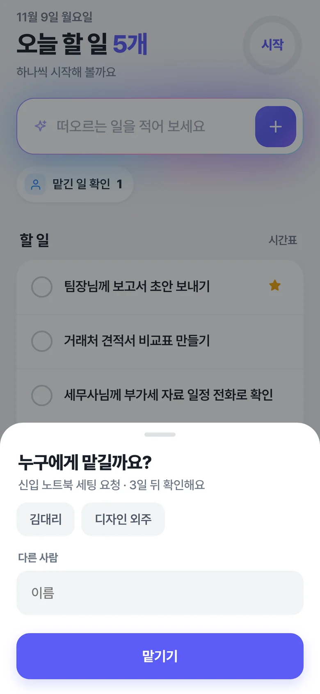
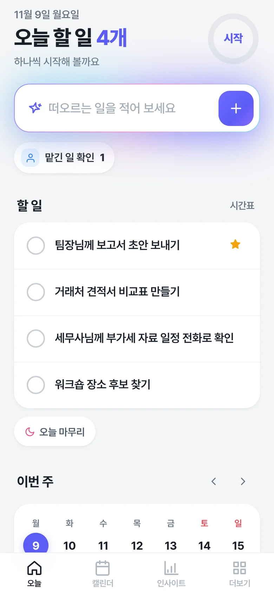
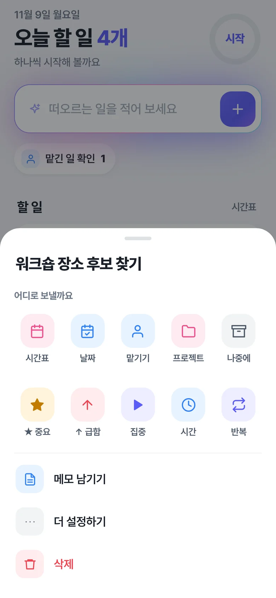
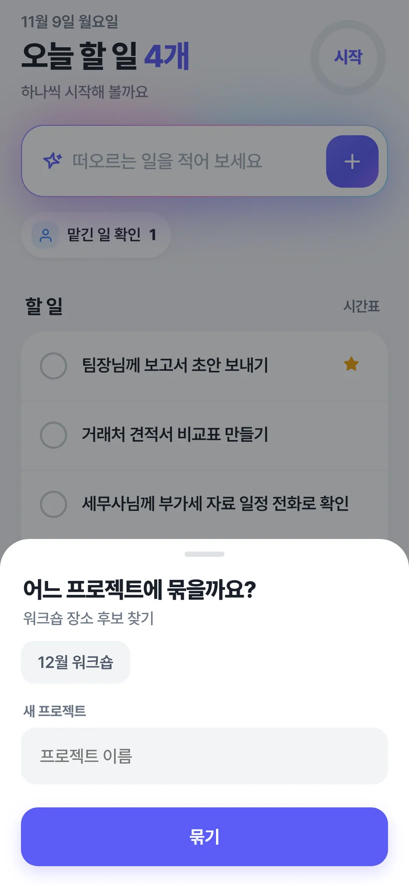
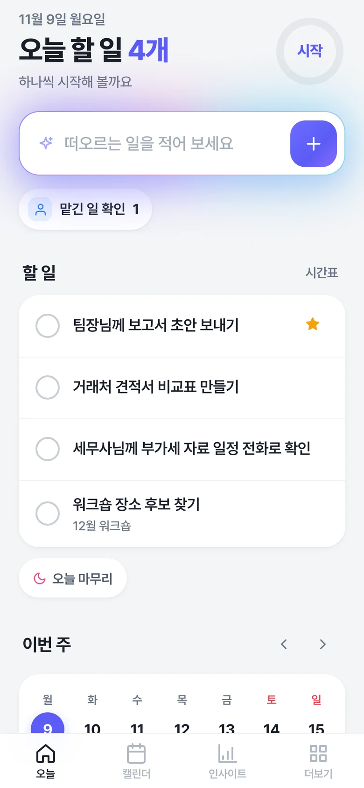
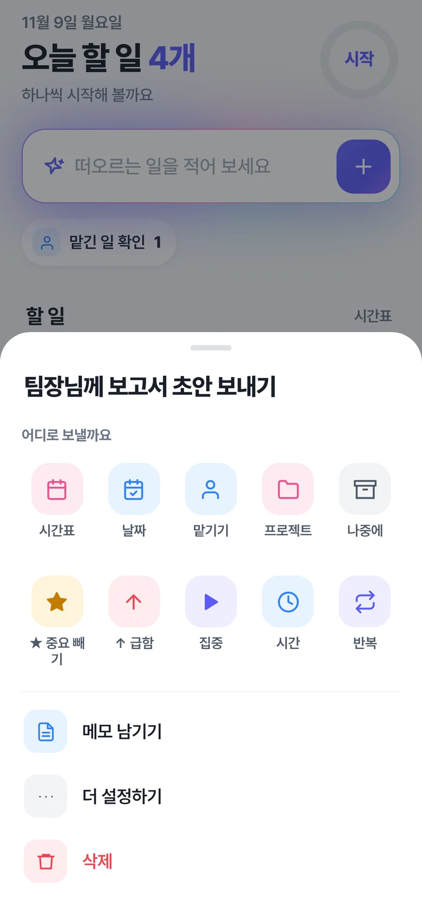
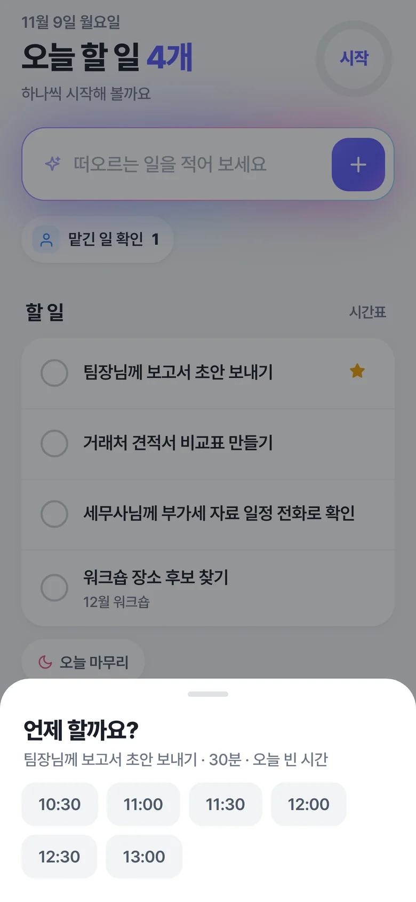
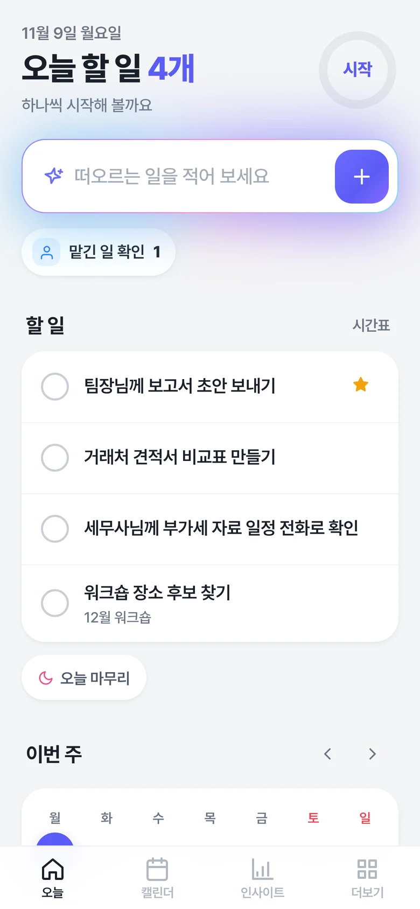
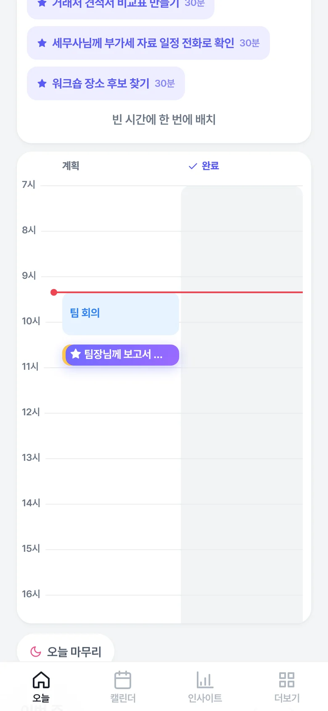
적고 엔터. 담은 일은 바로 오늘 할 일이 돼요.
중요하면 ★, 급하면 ↑. 중요한 일이 맨 위로 올라와요.
나중에, 맡기기, 프로젝트로 한 번에. PC에서는 끌어다 놓으면 끝이에요.
시간을 골라 넣으면 오늘 시간표에, 내 구글 캘린더에도 들어가요.
끌어다 놓거나 한 번에 배치하면, 구글 캘린더 일정 사이 빈 시간에 들어가요. 끝낸 일은 완료 칸으로.
오늘 마감
오늘 시간표와 프로젝트를 이미지로 복사해 카톡에 바로 붙여요. 끝낸 일은 연두, 못 끝낸 일은 빨강.
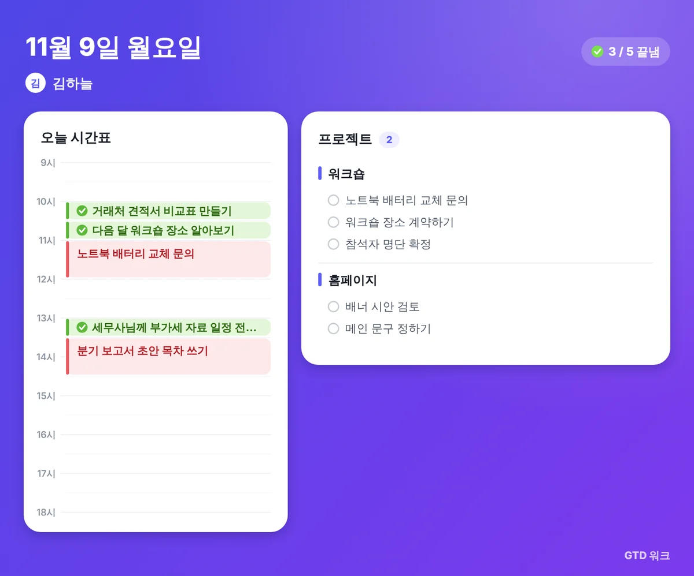
실제 앱 화면 그대로예요.
1 / 6
떠오르면 입력칸에 한 줄, 엔터.
2 / 6
나중에, 내일로, 맡기기, 프로젝트로.
3 / 6
오른쪽으로 한 번 밀면 완료.
4 / 6
시간표에 배치하면 구글 캘린더에도.
5 / 6
며칠째인지 보고, 문구는 복사해서 카톡에.
6 / 6
하나씩 답하며 한 주 정리.
실제 앱 화면 그대로예요.
1 / 6
떠오르면 입력칸에 한 줄, 엔터. 판단은 나중에 해요.
2 / 6
오늘이 아닌 일은 나중에, 내일로, 맡기기, 프로젝트로. PC에서는 끌어다 놓으면 끝.
3 / 6
다 한 일은 오른쪽으로 한 번 밀면 완료. PC 시간표에서는 완료 칸으로 끌어요.
4 / 6
시간표에서 한 번에 배치하면, 내 구글 캘린더에도 들어가요.
5 / 6
며칠째인지 보이고, 확인 문구는 복사해서 카톡에.
6 / 6
금요일 10분, 하나씩 답하며 한 주를 정리해요.
캘린더, 반복 업무, 맡긴 일, 한 주 돌아보기까지.
여러 캘린더를 함께 보고, 끌어서 옮기면 구글 캘린더에도 반영돼요.
매일 · 평일 · 매주 월 · 매월 말일. 끝내면 다음 회차가 생겨요.
누구에게, 며칠째인지. 리마인드 문구는 복사해서 보내요.
금요일엔 주간 검토가 하나씩 물어요. 지난 기간은 인사이트에서 한눈에.
개인 사용 기준
결제 정보는 받지 않아요. 신청하면 시작 링크와 사용법을 메일로 보내 드려요.
베타 테스터들의 말
“써 보니 정말 획기적이에요. 만족스러워요.”
“회사 전체에 도입해서 다 같이 스마트하게 일하고 싶어요.”
“솔직히, 나만 알고 싶은 서비스예요.”
“이거 쓰고 처음으로 MBTI J냐는 소리 들었어요.”
“할 일을 쏟아내니 머릿속이 정리되는 느낌이 들었어요.”
“이제 이거 없으면 일 못 합니다.”
베타 테스터들이 써 보고 남긴 말이에요.
회의 끝나면 받은 일이 머릿속에만 쌓여요. 뭘 놓쳤는지도 모르겠어요.
떠오를 때마다 입력칸에 한 줄씩 적어 두세요. 바로 오늘 할 일이 되고, 아닌 일은 나중에·맡기기로 보내면 끝이에요.
카톡, 메일, 메모장… 할 일이 흩어져 있어서 매번 찾게 돼요.
옮겨 적기만 하면 한곳에 모여요. 오늘 할 일은 캘린더 빈 시간에 한 번에 배치돼요.
앱은 설정이 복잡해서 깔아 놓고 결국 안 쓰게 돼요.
설치 없이 구글 계정으로 시작해요. 개인 사용은 평생 무료예요.

할 일은 내 구글 드라이브에만. 운영자 서버를 거치지 않아요.
신청하면 시작 링크 · 사용법 · 사용자 커뮤니티 카톡방을 메일로 보내 드려요.
네, 개인 사용은 평생 무료예요. 내 구글 드라이브에 내 시트를 만들어 쓰는 방식이라 서버 비용이 없고, 회원가입도 없어요.
내 구글 드라이브의 내 시트에만 저장돼요. 앱은 내 브라우저에서 구글에 바로 저장하고, 운영자 서버는 없어요. 앱은 자기가 만든 시트만 볼 수 있어서 내 다른 파일도 못 봐요. GTD 워크를 만든 사람도 내 시트를 볼 수 없어요.
구글 심사를 받는 중이라 나오는 안내예요. 고급 ▸ 이동을 누르고, 권한 화면에서 모두 선택 후 계속을 누르면 돼요. 앱이 쓰는 권한은 "이 앱이 만든 파일"과 "캘린더"뿐이에요.
네. 휴대폰에서 메일로 받은 시작 링크를 열고 같은 구글 계정으로 로그인하면 PC와 같은 시트를 이어서 써요. 브라우저 메뉴에서 홈 화면에 추가하면 앱처럼 열려요.
그대로예요. 앱은 열 때마다 최신 버전이고, 새 버전은 시트에 열을 추가만 하고 지우지 않아요.
구글 계정 하나면 돼요. 구글 캘린더 일정과 함께 보고, 할 일을 시간표에 끌어다 넣으면 내 캘린더에 들어가요. ★ 중요 · ↑ 급함으로 나누고, 하루 끝엔 시간표를 이미지로 공유하고, 인사이트에서 중요한 일에 쓴 시간과 꾸준함을 돌아봐요. 메일 알림, 지메일·카톡에서 바로 담기, AI 자동 분류, 팀 공유는 아직 안 돼요.